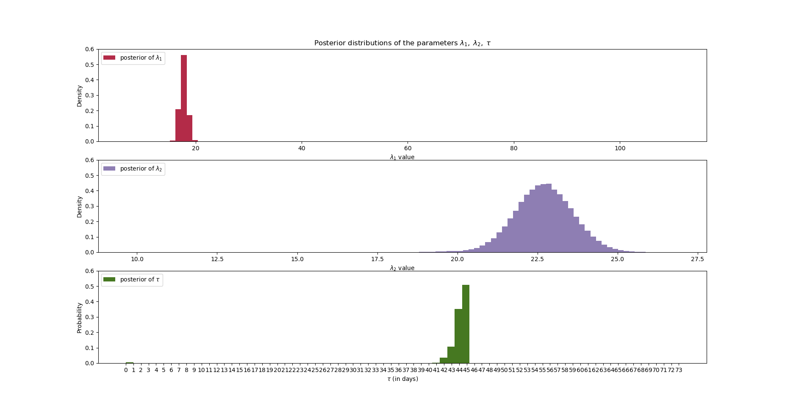

HMC可以对连续变量进行抽样，特点是能够应用于高维模型。MCMC可以对离散变量进行抽样。对于同时包含连续和离散变量的模型，可以交替使用HMC和MCMC进行抽样。
以下显示bayesian methods for hackers第一章第27页的例子，这个模型包含两个连续变量和一个离散变量。
这个抽样结果与书中使用pymc(MCMC)抽样结果非常类似。

为了实现交替抽样，我们需要定义两个能量函数，一个用于抽样连续变量，另一个用于抽样离散变量。 连续参数的能量的梯度可以使用autograd自动求出。离散参数的能量不需要梯度。
def U(x): global tau0 lam1, lam2 = x[0,:], x[1,:] lam = lambda_(tau0, lam1, lam2) return np.sum(poisson_U(lam),axis=1) + exp_U(lam1) + exp_U(lam2) dU = grad(U) def V(tau): global lam0 lam1, lam2 = lam0[0,:], lam0[1,:] lam = lambda_(tau, lam1, lam2) return np.sum(poisson_U(lam),axis=1) + exp_U(lam1) + exp_U(lam2)
然后在循环中交替更新连续变量和离散变量。
gen_V = mcmc(V, x_min=0, x_max=n_count_data, POINTS=POINTS) gen_U = hmc(U, dU, x0=lam0, D=D, BURNIN=BURNIN, POINTS=POINTS,bndchk=bndchk) TAU = [] LAM0 = [] LAM1 = [] for i in range(BURNIN*2): tau0 = next(gen_V) lam0 = next(gen_U) print(i) if i > BURNIN: TAU.append(tau0) LAM0.append(lam0[0,:]) LAM1.append(lam0[1,:])
有一个实现细节，为了保证抽样准确性，hmc和mcmc都需要实现等概率跳转，然后利用Metropolis进行判断。